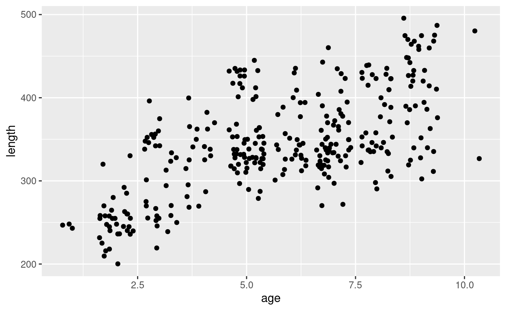
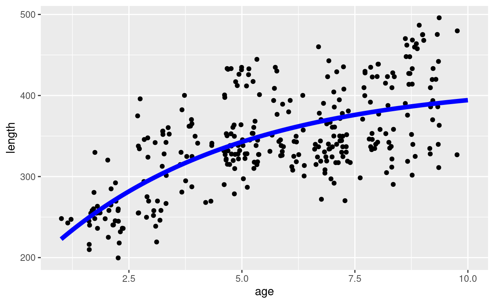
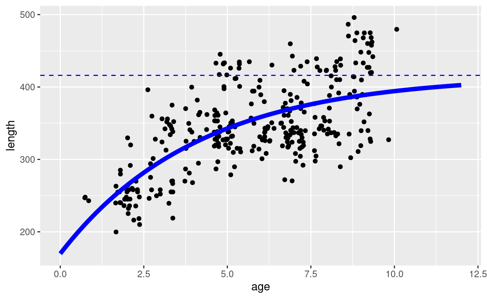
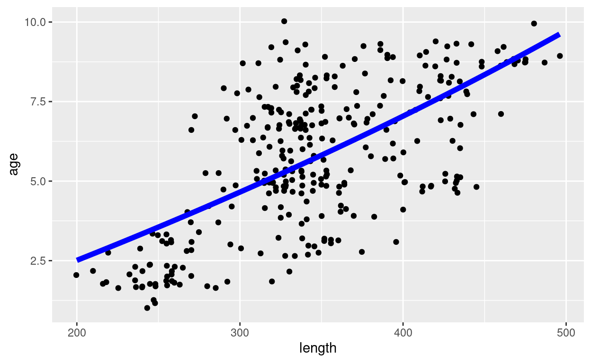

This blog post is not about criticising the von Bertalanffy growth model or the methods used to estimate the von Bertalanffy parameters from size-at-age data. There is a lot of literature about that. This blog post is about the difference between age-dependent and size-dependent growth rates. In the past we had mis-used the age-based von Bertalanffy growth species parameters w_inf and k_vb when setting up mizer models and this blog posts explains why that was a bad idea.
A von Bertalanffy growth curve is an expression for the length \(L\) of an average fish of age \(a\):
\[ L(a) = L_\infty\left(1-e^{-K(a-t_0)}\right). \]
The constants \(L_\infty, K\) and \(t_0\) are the von Bertalanffy growth parameters.
We can teach R about this with
length_vB <- function(age, Linf, K, t0) {
Linf * (1 - exp(-K * (age - t0)))
}If we assume a length-weight relationship of the form \(w = a L^b\) then we get an expression for the weight as a function of age:
\[ w(a) = w_\infty\left(1-e^{-K(a-t_0)}\right)^b \]
with the same parameters \(K\) and \(t_0\) and \(w_\infty = aL_\infty^b\).
The von Bertalanffy growth model is quite simple as a deterministic model of growth. The issue becomes complicated only because growth in the real world is not deterministic. Different fish, even in the same stock, have different luck in finding food and they also have different genes. So the von Bertalanffy growth curve is used to describe average fish. Whenever one hears the word “average”, on needs to be very careful that one knows how that average is taken.
Here is the short summary of the main message from this blog post:
The von Bertalanffy parameters describe the growth averaged over all fish of the same age, as is appropriate in age-based models. Mizer is a size-based model and hence needs the growth averaged over all fish of the same size. This makes it inappropriate to use the von Bertalanffy parameters when calibrating a mizer model.
In particular, the von Bertalanffy parameter \(w_\infty\) is the asymptotic size of an average individual whereas the mizer parameter
w_infis the asymptotic size of the largest individual. A mizer model that uses estimated values for \(w_\infty\) as the value forw_infwill predict that there are no fish larger than \(w_\infty\) and thus can not reproduce the observed size distributions.
The message about the difference between the growth rate of an average individual of a particular age and the growth rate of an average individual of a particular size can also be important outside of mizer, for example when using size-resolved data to estimate the productivity of a species.
The remainder of this blog post is just about illustrating the above message. In particular, it makes it concrete what we mean by averaging at a fixed age or averaging at a fixed size. That is, we demonstrate the difference between fitting a curve by minimising the squared difference between observed size and predicted size and fitting a curve by minimising the squared difference between observed age and predicted age.
If you just want to know what you can use instead of the von Bertalanffy parameters you can jump straight to “So what should you do?”
Estimating von Bertalanffy parameters
The von Bertalanffy growth parameters are usually obtained by fitting the von Bertalanffy curve to size-at-age data. For a good introduction I recommend the fishR vignette. To illustrate this we will use the Croaker2 data set contained in the FSAdata package. The data consists of observations of the lengths and ages of a sample of fish.
library(tidyverse)
df <- FSAdata::Croaker2 |>
select(age = age, length = tl) |>
filter(age > 0) |>
na.omit()
pl <- ggplot(df) +
geom_jitter(aes(x = age, y = length))
pl
In this scatterplot each point shows the length and age of one croaker from our sample.
The standard method to fit a von Bertalanffy curve to such a point cloud of size-at-age observations is the method of least squares. This consists of choosing the parameters so as to minimise the sum of the squares of the differences between the the observed lengths and the length predicted by the von Bertalanffy curve. So if we denote the length measurements by \(L_i\) and the corresponding age measurements by \(a_i\) then we want to minimise
\[ \sum_i (L_i - L(a_i))^2\]
where the sum is over all fish in our sample.
To find the minimum, we will use the function optim(). First we create a function that calculates the sum of squares when given a vector with the parameters:
sum_of_squares <- function(par, df) {
Linf <- par[[1]]
K <- par[[2]]
t0 <- par[[3]]
sum((df$length - length_vB(df$age, Linf, K, t0))^2)
}We need to give an initial guess for the parameters to optim, as well as lower bounds on the parameter values.
It does not matter too much what the initial guess is as long as it is not too wrong. The lower bound is needed to keep the optimizer from trying negative values for \(K\). Now we can call optim(). (We use the method “L-BFGS-B” because that is the only built-in method that handles bounds on the parameters.)
op_age <- optim(start, fn = sum_of_squares,
df = df, lower = lower,
method = "L-BFGS-B")
op_age$par Linf K t0
416.0794061 0.2423941 -2.1629160 Let us plot the von Bertalanffy curve with these parameters on top of or observations:
pl <- pl +
geom_function(fun = length_vB, args = as.list(op_age$par),
linewidth = 2, colour = "blue")
pl
At each age the fitted von Bertalanffy curve approximates the average of the lengths of all the fish of that age.
Of course, the curve is only made to fit the data in the observed size range. The curve clearly does not extrapolate well to larval sizes as we can see from the large negative value of \(t_0\). This becomes clearer if we extend the age range of the plot.
pl + xlim(0, 12) +
geom_hline(yintercept = op_age$par[["Linf"]],
colour = "blue", linetype = "dashed")
The curve would predict a length of more than 170cm at birth, which is clearly nonsense. The larval growth must be much faster than predicted by the von Bertalanffy curve. That is why mizer works with a bi-phasic growth model, but that is not our current topic.
In the above plot we also indicated the average asymptotic length \(L_\infty\) with a dashed blue line. What will be important for us is to note that this is the average asymptotic length and that there are a lot of fish with a length larger than \(L_\infty\).
There are many issues that we could debate and that have been debated at length in the literature:
- Is the von Bertalanffy growth model the best growth model.
- How reliably can the growth be estimated from the size-at-age data.
- Is least squares estimation an appropriate method.
But none of these are our topic. We will assume that the von Bertalanffy curve gives an appropriate representation of the length at age of an average fish of that age.
Age-dependent growth rate
The slope of the von Bertalanffy curve at age \(a\) gives the average growth rate of fish of that age:
\[\frac{dL(a)}{dt}=\frac{dL(a)}{da}=K\, L_\infty\, e^{-K(a-t_0)} = K(L_\infty - L(a)).\] (We used that time \(t\) and age \(a\) increase together, \(da/dt=1\).)
The important point to understand is that this is the growth rate as a function of age. The length \(L(a)\) that enters the expression is the average length of fish of age \(a\). This is useful information in age-based population models. It is not useful in size-based models like mizer.
Size-dependent growth rate
We want the average growth rate for fish of some given length \(L\) rather than the average growth rate for fish of a given age \(a\). Why? There can be several reasons.
Assume for example that we want to estimate the productivity of a population and have only information about the size distribution of the population. Such size data is often more readily available than age data because length or weight measurements are easy while age determination is difficult and time consuming. If we have the average growth rate of fish as a function of size then we can multiply that by the abundance of fish of that size and sum over all sizes to get the total productivity.
More relevantly to us, the mizer model is a size-based model that uses the growth rate as a function of size to project the size distribution into the future. Mizer of course can calculate this growth rate itself with its getEGrowth() function. However it would be good if one had an observed growth rate to compare to to calibrate the species parameters in mizer that influence the mizer growth rate.
One might think that the above equation also gives an expression for the average growth rate for fish of length \(L\). Can’t we simply replace the \(L(a)\) by \(L\)?
\[\frac{dL}{dt} \stackrel{?}{=} K(L_\infty - L).\]
We can’t. If we try that, then at all \(L\) above \(L_\infty\) the formula gives a negative growth rate. But that is not how fish work. Fish that are lucky enough to grow beyond the average asymptotic size \(L_\infty\) are not compelled to shrink back to average size.
What we need to realise is that in fitting the von Bertalanffy curve to the size-at-age data we did not treat size and age equally. Rather we chose to average over all sizes at fixed age. From that averaged data we can not reconstruct the information about what happens at a specific size.
Size-based growth curve
We now understand that from a curve describing the average size of all fish of a certain age we can not deduce the average age of all fish of a certain size and hence we can not use it to determine the growth rate as a function of size. What we would need is a curve describing the average age of all fish of a certain size. Let’s refer to that as a size-based growth curve as opposed to an age-based growth curve.
Now we want to discuss how we can determine a size-based growth curve from size-at-age data. This should be possible. If the size-at-age data comes from a random sample of fish for each of which its size and age were measured, then the data treats size and age the same. It was only our least squares fit that singled out age as the explanatory variable and size as the variable to average over. We now simply have to reverse the roles of size and age.
We’ll again use the von Bertalanffy growth model, in the sense of assuming that the growth rate decreases linearly with length,
\[\frac{dL}{dt} = K(L_{max}-L),\]
but now we interpret this as the growth rate of an average individual of size \(L\). This immediately implies that the parameter \(L_{max}\) is the length of the largest individual in the population. We can use that growth rate to express the age as a function of length instead of expressing length as a function of age. This gives the expression
\[ a(L) = t_0 - \frac{1}{K}\log\left(1-\frac{L}{L_{max}}\right). \]
This expression of course has a singularity at \(L = L_{max}\) because even if a fish lived for an infinite amount of time it would not grow beyond \(L_{max}\). Dealing with that singularity in the expression numerically would be challenging, so we acknowledge that fish are never going to live infinitely long and therefore \(L\) will never quite reach \(L_{max}\) and so we can cut of the curve when \(L\) gets sufficiently close to \(L_{max}\).
Instead of choosing the parameters so as to minimize the sum of squares of the difference between the observed lengths and the predicted lengths, we minimize the sum of squares of the difference between the observed ages and the predicted ages. The function calculating the sum of squares is now
sum_of_squares <- function(par, df) {
Lmax <- par[[1]]
K <- par[[2]]
t0 <- par[[3]]
sum((df$age - age_vB(df$length, Lmax, K, t0))^2)
}Because all observations must be strictly shorter than \(L_{max}\) we need to start optim with a starting value for \(L_{max}\) that is above the largest observed length.
start <- list(Lmax = max(df$length) * 1.2, K = 0.3, t0 = 0)
lower <- list(Lmax = 0, K = 0.01, t0 = -4)
op_length <- optim(start, fn = sum_of_squares, df = df,
lower = lower, method = "L-BFGS-B")
op_length$par Lmax K t0
1235.69702683 0.04733173 -1.22046772 We can now again visualise this curve by plotting it on top of the point cloud of observations:
pl <- ggplot(df) +
geom_jitter(aes(x = length, y = age)) +
geom_function(fun = age_vB, args = as.list(op_length$par),
linewidth = 2, colour = "blue")
pl
Given that we are now dealing with the size-based growth curve, we plot the length on the x axis and the age on the y axis.
I am not saying that fitting a von Bertalanffy curve to the average growth at size via least squares is a good idea. I am showing it only to compare to the fitting of a von Bertalanffy curve to the average growth at age that is commonly done. I think that a bi-phasic growth model like that used in mizer is more appropriate.
One problem with the von Bertalanffy curve is that there is a wide range of maximum sizes that can fit the data almost equally well. For example we may find that the maximum length of 1236cm predicted by the least squares fit is unrealistic and set an upper bound of 600cm:
upper <- list(Lmax = 600, K = 0.5, t0 = 4)
op_length_2 <- optim(start, fn = sum_of_squares, df = df,
lower = lower, upper = upper, method = "L-BFGS-B")
op_length_2$par Lmax K t0
600.0000000 0.1838247 0.9216962 That leads to totally different values for \(K\) and \(t_0\) but the fit is almost as good:
pl + geom_function(fun = age_vB, args = as.list(op_length_2$par),
linewidth = 2, colour = "green")
So what should you do?
We have now understood that to estimate the size-dependent growth rate you should not use the age-based von Bertalanffy parameters, even though they are routinely used in age-based models and are therefore often readily available. So what do I propose you use instead for your species parameters when setting up a mizer model?
Maximum size
I propose that for the maximum size parameter w_inf you use the largest observed size. If necessary you can obtain this from FishBase. FishBase gives the maximum length in cm, so you also need the length-weight conversion parameters a and b to get he maximum weight in grams. Here is an example:
species <- c("Gadus morhua", "Sprattus sprattus")
length_weight <- rfishbase::estimate(species) |>
select("Species", "a", "b")
max_length <- rfishbase::species(species) |>
select(Species, Length)
max_weight <- left_join(max_length, length_weight) |>
mutate(w_inf = a * Length ^ b)
max_weight# A tibble: 2 × 5
Species Length a b w_inf
<chr> <dbl> <dbl> <dbl> <dbl>
1 Gadus morhua 200 0.00692 3.08 84561.
2 Sprattus sprattus 16 0.00550 3.09 28.9Maximum intake rate
To determine a good value for the coefficient h of the maximum intake rate in mizer I recommend using the size and age at maturity. For that you need both a w_mat (in grams) and an age_mat (in years) column in your species parameter data frame.
If necessary, you can look up values for the maturity length and maturity age on fishbase. For example
maturity_tbl <- rfishbase::maturity("Sprattus sprattus") |>
select(Species, l_mat = Lm, age_mat = tm, Locality) |>
na.omit()
maturity_tbl# A tibble: 4 × 4
Species l_mat age_mat Locality
<chr> <dbl> <dbl> <chr>
1 Sprattus sprattus 11.5 2 North Sea
2 Sprattus sprattus 8.10 1.20 Baltic Sea, Sub-divisions 22-32, 20…
3 Sprattus sprattus 12 2 Baltic Sea
4 Sprattus sprattus 8.10 1.20 Baltic Sea, sub-divisions 22-32 You can then select the row most suitable for your purposes and convert the maturity length to maturity weight. Then you can determine the value for h that will create the juvenile growth necessary to reach the maturity size by the maturity age with the mizerExperimental::get_h_default() function. In the next release of mizer calling this function will no longer be necessary because mizer will use it by default if you do not include an h column in your species parameters.
The next release of mizer will also encourage the use of the column name w_max instead of w_inf to avoid the confusion with the age-based von Bertalanffy parameter and it will issue a warning if you use the k_vb column in the species parameter data frame. The help pages will be updated accordingly.
If you have good size-at-age data then you will of course want to use it to also extract information about the shape of the growth curve between maturity and maximum size. This would for example allow you to get information about how fast the investment into reproduction increases with body size. For this purpose it is important that you have access to the actual size-at-age data, not its age-based summary in terms of von Bertalanffy parameters.